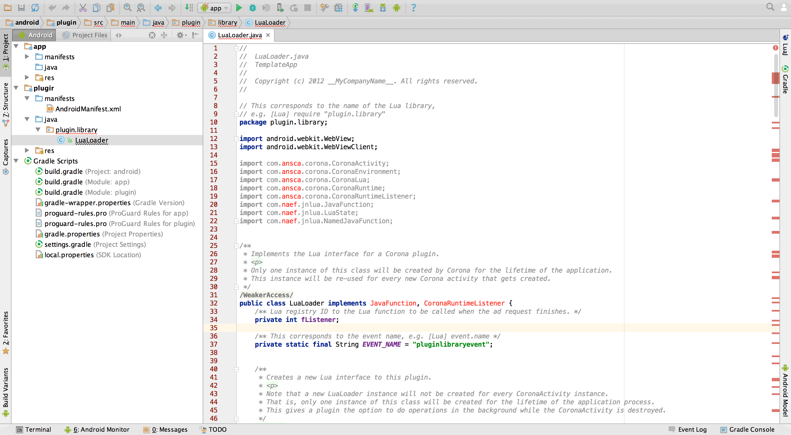
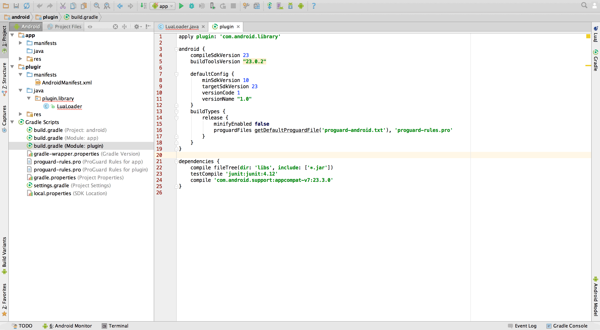
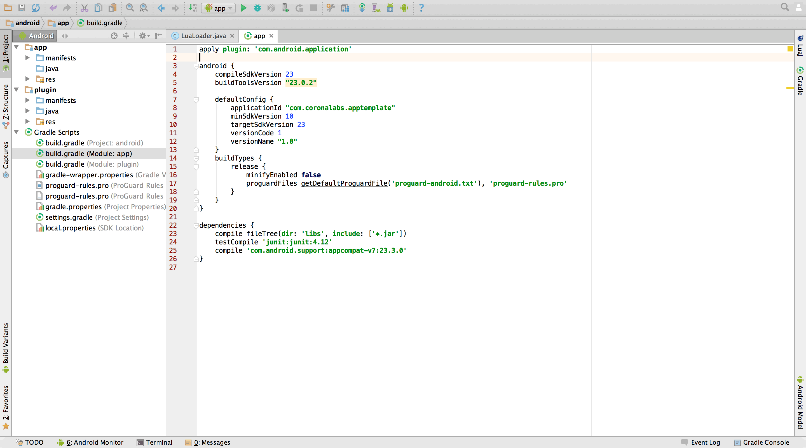

Android Studio Integration
Editing Gradle Scripts
Plugin Module
- From the
Projectsidebar in Android Studio, openLuaLoader.java. You will see errors about missing libraries:

- From within the Gradle Scripts tree, open
build.gradle(Module: plugin)

- Between the
androidanddependenciesblocks, add a variable defining where theCoronaEnterprisedirectory is. This variable points to the symbolic link, which points to the realCoronaEnterprisedirectory.
def coronaEnterpriseDir = "$rootDir/CoronaEnterprise"
- Replace everything inside the
dependenciesblock with the following lines. These tell Android Studio to look for extra libraries inside CORONA_ENTERPRISE_PRODUCT and inside thelibsdirectory of thepluginmodule.
compile fileTree(dir: "$coronaEnterpriseDir/Corona/android/lib/Corona/libs", include: '*.jar') compile fileTree(dir: 'libs', include: '*.jar')
Remove the entire
buildTypesblock.To finish the plugin section of
build.gradle, you need to add an extra task to create aplugin.library.jarthat can later be submitted to the Corona Marketplace or included in another project. Add this code before thedependenciesblock:
task exportPluginJar (type: Copy, description: 'place the plugin JAR file in the outputs directory and give it a name from the AndroidManifest.xml') {
def pluginName = new XmlSlurper().parse(file('src/main/AndroidManifest.xml')).@package.text()
from "$buildDir/intermediates/bundles/release/"
into "$buildDir/outputs/jar"
include 'classes.jar'
rename 'classes.jar', "${pluginName}.jar"
doFirst {
println '== exportPluginJar =='
}
}
tasks.withType(JavaCompile) {
compileTask -> compileTask.dependsOn('exportPluginJar')
}
The defined task gets the name of the plugin from the AndroidManifest.xml file inside the plugin module and it creates the .jar file (plugin.library.jar) inside the plugin/build/output/jar/ directory after the project has been built.
- Click the Sync Now button in the
upper-right corner. Yourbuild.gradlefor the plugin should now look like this (andLuaLoader.javashould not have import errors):

- At this point, you can close this
build.gradleand proceed to the next section. You can also fix the JavaDocs and remove unused imports so Android Studio will stop complaining about them inLuaLoader.java.
If your plugin has additional dependencies, they should be added inside the
dependenciesblock ofbuild.gradle(Module: plugin)stand-alone .jarlibraries insideplugin/libs/orapp/libs/.If your Enterprise project does not use a separate plugin module, be sure that the CORONA_ENTERPRISE_PRODUCT libraries are compiled into you main app module by adding this line to the
dependenciesblock of your main app module:compile fileTree(dir: "$coronaEnterpriseDir/Corona/android/lib/Corona/libs", include: '*.jar')In
build.gradlefiles, you must always check what versions of Android tools, Android APIs, and other libraries are used. Android SDK evolves and these version numbers will increase. Note that some plugins may require older versions of specific libraries as they might be incompatible with new ones. Thus, you should always take proper care of versions.
App Module
- From within the Gradle Scripts tree, open
build.gradle(Module: app)

Remove the entire
buildTypesblock.Now you must modify this script to make a healthy
.apkon build. In thedependenciesblock, remove thejunitline and add the following line. This tells Android Studio to compile thepluginmodule first and include it into the.apk.
compile project(':plugin')

If you have a plugin module, compile it into your app with compile project(':plugin')$coronaEnterpriseAndroidLibDir in the next step).
compile fileTree(dir: "$coronaEnterpriseAndroidLibDir/libs", include: '*.jar')
- Now add the following variable definitions before the
androidblock. The first two extract the application name and.apkfilenames from theAndroidManifest.xmlfile, while the last six define the locations of various project and CORONA_ENTERPRISE_PRODUCT directories needed to build the project correctly.
// Application name variables
def appName = new XmlSlurper().parse(file('src/main/AndroidManifest.xml')).@package.text()
def apkName = appName.toString().split('\\.').last()
// Paths used throughout the build process
def coronaEnterpriseDir = "$rootDir/CoronaEnterprise"
def assetsDir = "$projectDir/src/main/assets"
def jniLibsDir = "$projectDir/src/main/jniLibs"
def coronaEnterpriseMacBinDir = "$coronaEnterpriseDir/Corona/mac/bin"
def coronaEnterpriseSharedDir = "$coronaEnterpriseDir/Corona/shared"
def coronaEnterpriseAndroidLibDir = "$coronaEnterpriseDir/Corona/android/lib/Corona"

- Now, before the
dependenciesblock, we begin adding all of the crucial tasks for building the.apk. First, add thecleanAssetstask below.
task cleanAssets(type: Delete, description: 'remove Corona assets and libcorona.so') {
delete "$assetsDir"
delete "$jniLibsDir"
doFirst {
println "== cleanAssets =="
}
doLast {
new File("$assetsDir").mkdirs()
}
}
The cleanAssets task cleans up the files that are created during execution of the tasks which follow. This needs to be executed every time so that updates to your lua project can be picked up and resigning of the app can occur.
- With the ability to clean the Corona-specific portions of the project, now add the
compileLuatask below.
task compileLua(type: Exec, description: 'compile Lua source code') {
executable = "$coronaEnterpriseMacBinDir/lua"
workingDir = "$coronaEnterpriseMacBinDir"
args = [
'-e',
"package.path='$coronaEnterpriseSharedDir/bin/?.lua;$coronaEnterpriseSharedDir/bin/?/init.lua;'..package.path",
"$coronaEnterpriseSharedDir/bin/Compile.lua",
'mac',
"$coronaEnterpriseDir"
]
environment = [
LUA_CPATH : "$coronaEnterpriseMacBinDir/?.so",
TARGET_PLATFORM : 'android',
PROJECT_DIR : "$rootDir",
CORONA_COPY_PNG_PRESERVE : '--preserve',
CONFIGURATION : 'release',
CORONA_ASSETS_DIR : "[RELATIVE_PATH_TO_CORONA_PROJECT]", // Default is: "$rootDir/../Corona"
CORONA_TARGET_RESOURCES_DIR : "$assetsDir",
CORONA_TARGET_EXECUTABLE_DIR: "$assetsDir"
]
dependsOn 'cleanAssets'
doFirst {
println '== compileLua =='
}
}
The compileLua task compiles your Lua source code from the Corona directory into bytecode stored inside the resources.car file. It also places all other assets from that directory into the app/src/main/assets/ directory so they get bundled into the .apk.
- Now that the script can compile your Lua code, add the two copy tasks below.
task copyCoronaResources(type: Copy, description: 'include resources') {
from fileTree(dir: "$coronaEnterpriseAndroidLibDir/res", include: '**/*')
into "$projectDir/src/main/res"
dependsOn 'compileLua'
doFirst {
println '== copyCoronaResources =='
}
}
task copyCoronaNativeLibs(type: Copy, description: 'include precompiled libraries') {
from fileTree(dir: "$coronaEnterpriseAndroidLibDir/libs", include: '**/*.so')
into "$jniLibsDir"
dependsOn 'copyCoronaResources'
doFirst {
println '== copyCoronaNativeLibs =='
}
}
The
copyCoronaResourcestask takes Android resource files from CORONA_ENTERPRISE_PRODUCT (widgets and image sheets for example) and copies them to theapp/src/main/res/directory so they also end up inside the.apk.The
copyCoronaNativeLibstask takes.solibraries from CORONA_ENTERPRISE_PRODUCT and copies them into the project’sapp/src/main/jniLibsdirectory. Unlike Ant build where.jarand.sofiles would sit in the same rootlibsdirectory, Android Studio expects.sofiles in theapp/src/main/jniLibsdirectory for inclusion inside the.apk.
- Since all the Corona assets and libraries are in place, now we add a task to sign the build defined below.
task certifyBuild(type: Exec, description: 'certify libcorona.so with resource.car hash and developerkey.cert') {
executable = "$coronaEnterpriseMacBinDir/CoronaBuilder.app/Contents/MacOS/CoronaBuilder"
workingDir = "$coronaEnterpriseMacBinDir"
args = [
'app_sign',
'sign',
"$coronaEnterpriseSharedDir/resource/developerkey.cert",
"$assetsDir/resource.car",
"$jniLibsDir/armeabi-v7a/libcorona.so",
'little'
]
dependsOn 'copyCoronaNativeLibs'
doFirst {
println '== certifyBuild =='
}
}
The certifyBuild task digitally signs libcorona.so app/src/main/jniLibs)resources.car file. Without this task, the Corona application will fail to start on the device and yield a message about not being able to find/load main.lua.
- To kick off all the tasks we’ve added, we need to make them all dependent on the standard Android build process. This is done by adding a
dependsOnto the standard pre-build tasks shown below.
tasks.preBuild.dependsOn('certifyBuild')
You will notice that all tasks are executed in order defined by a dependsOn directive. You also tell Android Studio that its first task (preBuild) should also depend on them with this line:
tasks.preBuild.dependsOn('certifyBuild')
If you update CORONA_ENTERPRISE_PRODUCT, these tasks will pick up the most recent files the next time you build the project, making the update process painless.
- For release builds, place your keystore file into the
[PATH_TO_PROJECT_TEMPLATE]/App/android/directory and add the followingsigningConfigsblock inside theandroidblock, directly before thedefaultConfigblock. If you need assistance on creating a keystore, please see the Signing and Building — Android guide.
signingConfigs {
release {
storeFile file("$rootDir/apptemplate.keystore")
storePassword 'apptemplate'
keyAlias 'apptemplate'
keyPassword 'apptemplate'
}
}
- Within the
androidblock, replace theapplicationIdvalue in thedefaultConfigblock with"$appName". Additionally, add this line at the bottom of thedefaultConfigblock:
signingConfig signingConfigs.release
- Finally, for the
.apkfile to be properly named, add this code at the end of theandroidblock, directly following thedefaultConfigblock:
applicationVariants.all { variant ->
variant.outputs.each { output ->
output.outputFile = file(output.outputFile.getPath().replace('/app-', "/${apkName}-"))
}
}

- Click the Sync Now button in the
upper-right corner. Once this finishes and there are no errors to resolve, you can close thisbuild.gradle.